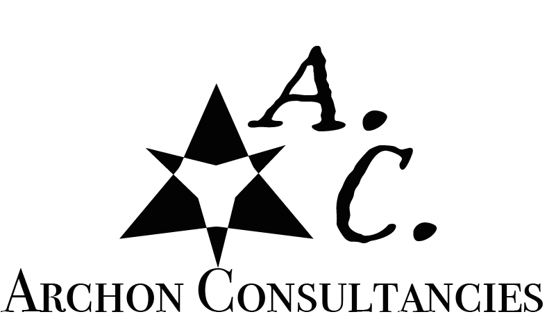
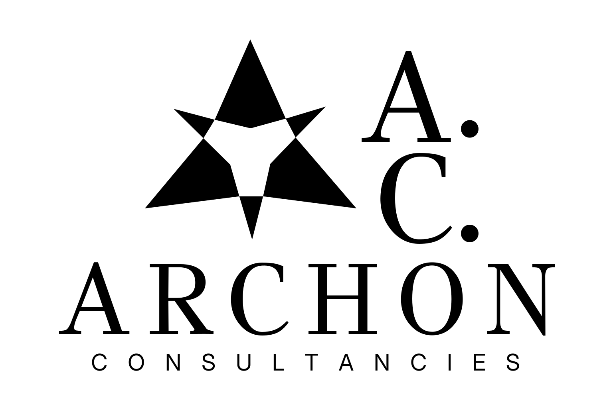
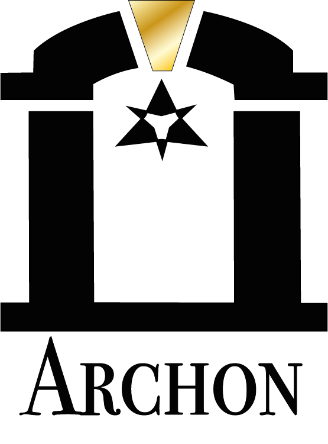
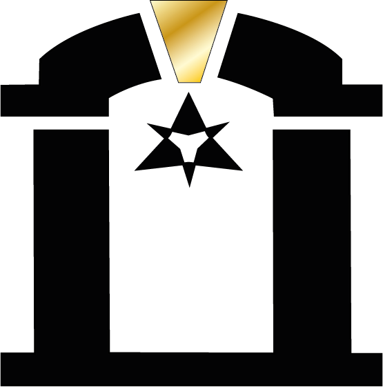
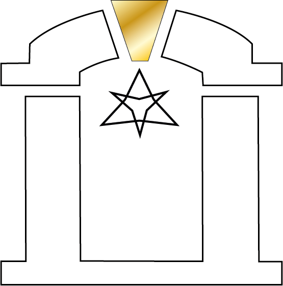
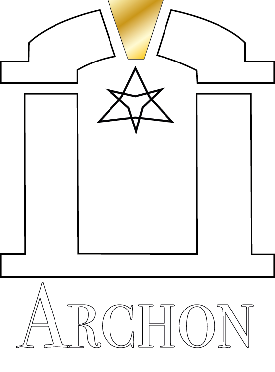

EQCLYPSE · Dato 360
El hueco era de marca, no de producto.
CREATIVIDAD QUE TOMA FORMA
Soy Pablo Alcocer. Conecto investigación, branding, marketing e inteligencia artificial para convertir ideas en marcas, sistemas y proyectos que se pueden ejecutar.
Explorar mi trabajo Una mirada creativa.
Una mentalidad de sistema.
01 / TRABAJO SELECCIONADO
Identidades que expresan.
Productos que resuelven.
Sistemas que conectan.
El hueco era de marca, no de producto.
Una visión. Todo un universo.
El carácter se diseña.
Inteligencia, cerca del trabajo.
Explorar. Probar. Medir.
IDENTIDAD PROPIA, PRODUCTOS Y EXPERIMENTOS EN DESARROLLO. EXPLORAR GITHUB ↗
02 / EL UNIVERSO ARCHON
Negro, marfil y oro.
Un lenguaje propio que conecta
estructura y sensibilidad.

La identidad matriz de Archon. Estrategia, creatividad y tecnología bajo una misma dirección.





03 / CÓMO PIENSO
Me muevo entre lo que una marca
quiere decir y lo que necesita
para hacerlo realidad.
Visión creativa.
Lógica de sistema.
Contexto, público y objetivo. Una conversación para identificar qué merece resolverse y qué debe comunicar el proyecto.
Una idea central, una jerarquía y un lenguaje visual. Definir las decisiones que harán reconocible a la marca.
Prototipos, interfaces y flujos. Conectar la experiencia visible con los procesos que la hacen funcionar.
Revisar la claridad, el uso y los detalles. Ajustar con lo aprendido y dejar una base que pueda seguir evolucionando.
04 / DETRÁS DEL TRABAJO
Diseño, tecnología y una forma práctica de resolver problemas.
Soy Pablo Alcocer Hurtado. Desde Zaragoza, conecto estrategia de marca, marketing, automatización e inteligencia artificial. En Archon desarrollo proyectos digitales propios y, durante mis prácticas con Dato 360, llevé la estrategia de EQCLYPSE desde la investigación hasta el plan de lanzamiento y su web e-commerce.
Compagino el segundo curso del Grado Superior en Marketing y Publicidad, en Montessori Zaragoza, con proyectos propios de marketing, branding e IA aplicada. Mi experiencia también pasa por la estrategia de marca, la revisión documental, la atención al público y la gestión operativa.
Me definen la curiosidad, el pensamiento crítico y la atención al detalle. Trabajo con IA generativa y prompt engineering, y me adapto con rapidez a nuevas herramientas y contextos.
EXPERIENCIA
Criterio analítico, comunicación profesional y experiencia en entornos con ritmo y responsabilidad.
Proyecto de prácticas de 1.º centrado en crear una propuesta de marca para acercar el vino al público joven.
Proyecto propio donde conecto marketing, identidad, automatización e IA aplicada.
Revisión y baremación de documentación en un proceso de selección pública.
Experiencia estival recurrente durante cuatro años en entorno comercial y logístico.
Colaboración puntual en proyectos digitales y de comunicación.
FORMACIÓN & IDIOMAS
CFGS · Montessori Zaragoza
Finalización prevista: marzo de 2027
Bachillerato
IES Molina de Aragón
Estancia académica
Halifax High School · uso fluido del inglés
Español Nativo
Inglés Avanzado / uso fluido · sin certificación oficial
COMPETENCIAS & HERRAMIENTAS
Identidad de marca, marketing digital, creatividad y comunicación, con conocimientos de administración y dirección de empresas (ADE).
IA generativa, prompt engineering, automatización, análisis de información y resolución de problemas.
Revisión documental y de currículums, validación de títulos, baremación, control de stock y logística.
Trato cercano, comunicación efectiva, ventas y atención al público. Responsabilidad, puntualidad, paciencia y trabajo en equipo.
PRÓXIMO PASOPrácticas curriculares disponibles desde marzo de 2027 · aproximadamente 375 h. Interés en IA y automatización, branding, contenido y redes sociales, marketing digital, e-commerce, diseño, SEO/SEM, publicidad, investigación, estrategia y área comercial.
05 / CERTIFICACIONES
Mi formación en Claude, herramientas de trabajo con IA y sistemas de agentes.
Una identidad, un producto o una idea
que todavía no sabes cómo explicar.
Podemos empezar por ahí.